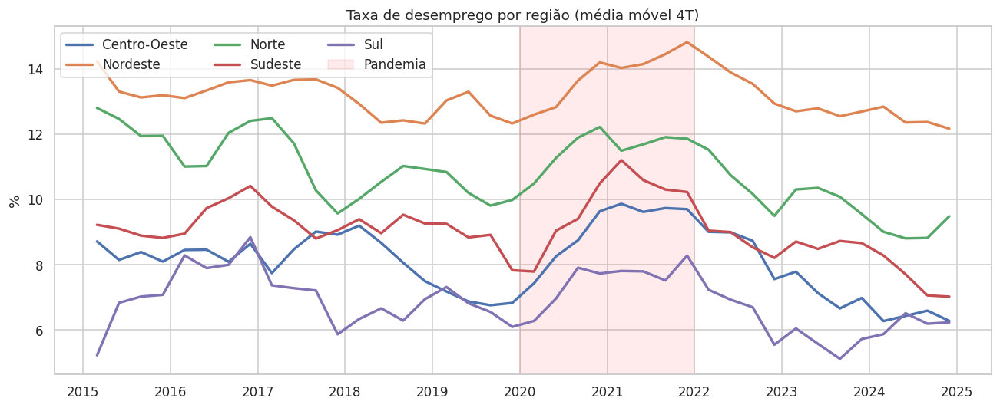
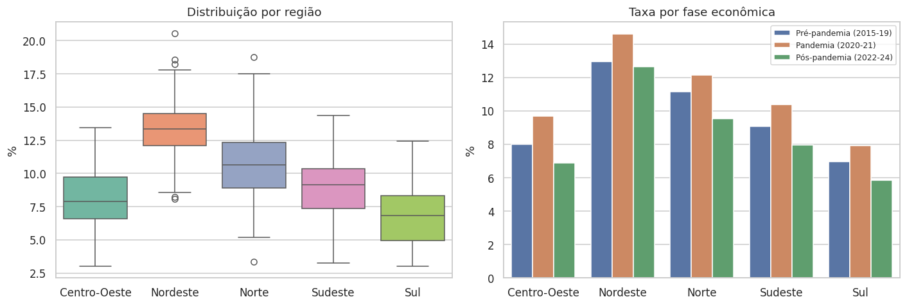
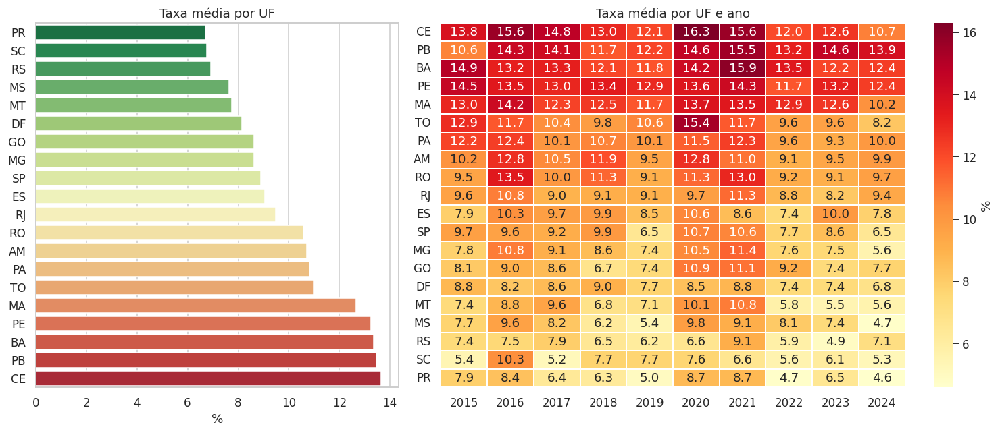
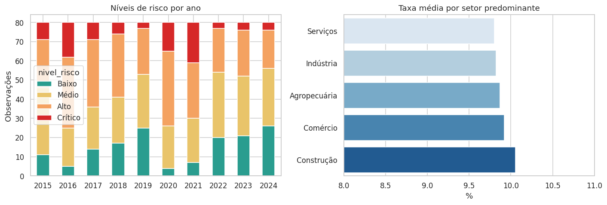
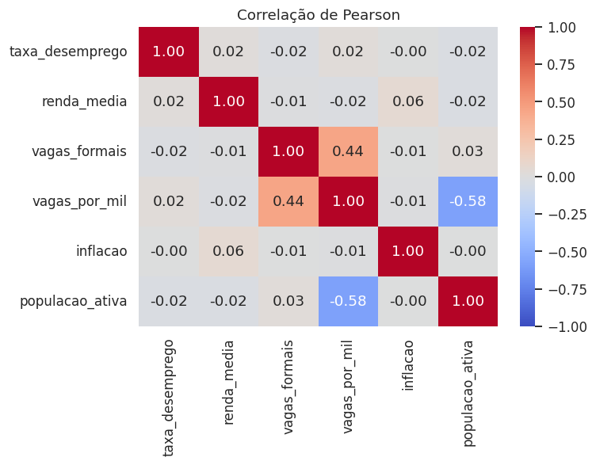

Análise de 800 observações trimestrais de 20 UFs (2015–2024) para identificar territórios vulneráveis, medir o impacto da pandemia e testar o que realmente explica o desemprego.
O desemprego não se distribui de forma uniforme. A base simulacao_desemprego_brasil.csv (800
linhas × 14 colunas, sem nulos ou duplicatas) reúne população ativa, empregados, desempregados, renda média,
vagas formais, inflação, setor predominante e nível de risco por UF e trimestre. Por ter populações diferentes
em cada linha, os agregados usam taxa ponderada (Σ desempregados ÷ Σ população ativa) em vez de
média simples.
Base simulada para fins didáticos.




